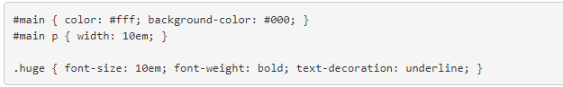
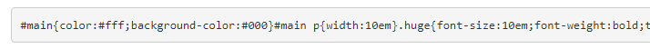
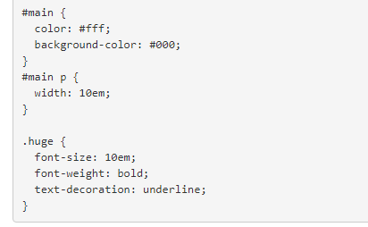

SASS的使用
分享人：周能
目录
1.背景介绍
2.知识剖析
3.常见问题
4.解决方案
5.编码实战
6.扩展思考
7.参考文献
8.更多讨论
一、背景介绍
CSS预处理器
要了解sass先看一下CSS 预处理器
CSS 预处理器 定义了一种新的语言，其基本思想是，用一种专门的编程语言，为 CSS 增加了一些编程的特性，将 CSS 作为目标生成文件，然后开发者就只要使用这种语言进行编码工作。
俗的说，“CSS 预处理器用一种专门的编程语言，进行 Web 页面样式设计，然后再编译成正常的 CSS 文件，以供项目使用。CSS 预处理器为 CSS 增加一些编程的特性，无需考虑浏览器的兼容性问题”，可以让你的 CSS 更加简洁、适应性更强、可读性更佳，更易于代码的维护等诸多好处。
二、知识剖析
什么是SASS
Sass 是一门高于 CSS 的元语言，它能用来清晰地、结构化地描述文件样式，有着比普通 CSS 更加强大的功能。
Sass 能够提供更简洁、更优雅的语法，同时提供多种功能来创建可维护和管理的样式表。
Sass 是最早的 CSS 预处理语言，有比 LESS 更为强大的功能
Sass 是采用 Ruby 语言编写的一款 CSS 预处理语言，它诞生于2007年，是最大的成熟的 CSS 预处理语言。
sass的安装
sass基于Ruby语言开发而成，因此安装sass前需要安装Ruby。
SASS的使用
SASS文件就是普通的文本文件，里面可以直接使用CSS语法。文件后缀名是.scss
SASS提供四个编译风格的选项
NESTED是 SASS 默认的输出格式，能够清晰反映 CSS 与 HTML 的结构关系。选择器与属性等单独占用一行，缩进量与 SASS 文件中一致，每行的缩进量反映了其在嵌套规则内的层数。

COMPACT 输出方式比起上面两种占用的空间更少，每条 CSS 规则只占一行，包含其下的所有属性。嵌套过的选择器在输出时没有空行，不嵌套的选择器会输出空白行作为分隔符。
COMPRESSED 输出方式删除所有无意义的空格、空白行、以及注释，力求将文件体积压缩到最小，同时也会做出其他调整，比如会自动替换占用空间最小的颜色表达方式。
EXPANDED 输出更像是手写的样式，选择器、属性等各占用一行，属性根据选择器缩进，而选择器不做任何缩进。
SASS的变量
SASS的变量使用$开头，可以把反复使用的css属性值 定义成变量，然后通过变量名来引用它们，而无需重复书写这一属性值
SASS的嵌套
在sass中属性和选择器嵌套是非常伟大的特性，因为它们不仅大大减少了你的编写量，而且通过视觉上的缩进使你编写的样式结构更加清晰，更易于阅读和开发。
SASS的注释
SASS共有两种注释风格。
标准的CSS注释 /* 注释 */ ，该会保留到编译后的文件。
单行注释 // 注释 ，只保留在SASS源文件中，编译后被省略。
SASS混合器
混合器使用@mixin标识符定义。
这个标识符给一大段样式赋予一个名字，这样你就可以轻易地通过引用这个名字重用这段样式
然后可以通过@include来使用这个混合器，放在你希望的任何地方。调用的混合器会把所有样式提取出来放在被调用的地方
混合器并不一定总得生成相同的样式。可以通过在混合器时给混合器传参，来定制混合器生成的精确样式。
SASS的继承
SASS允许一个选择器，继承另一个选择器。
sass的继承用@extend
SASS的占位符
占位符 用%开头
占位符也是一个非常强大的功能，和继承也有着密切的关系。比如说，我们有多个类都有相同的代码共有，需要继承同一个基类。但是基类本身并不存在或者基类自身并不需要这些样式，像继承的写法有产生了代码的冗余，最终会编译出多余的代码。
用占位符声明的代码，在不被@extend调用的情况下，是不会产生任何代码的
三、常见问题
混合器和继承，占位符之间的区别
四、解决方案
五、编码实战
六、拓展思考
何时使用混合器
利用混合器，可以很容易地在样式表的不同地方共享样式。如果你发现自己在不停地重复一段样式，那就应该把这段样式构造成优良的混合器，尤其是这段样式本身就是一个逻辑单元，比如说是一组放在一起有意义的属性。
判断一组属性是否应该组合成一个混合器，一条经验法则就是你能否为这个混合器想出一个好的名字。如果你能找到一个很好的短名字来描述这些属性修饰的样式，那么往往能够构造一个合适的混合器。如果你找不到，这时候构造一个混合器可能并不合适。
何时使用继承
继承是基于类选择器的（有时是基于其他类型的选择器），所以继承应该是建立在语义化的关系上。
如果a的样式和b的样式相同，那么就可以使用继承，让a继承b的属性，或者让b继承a的属性
何时使用占位符
占位符和继承基本一样，唯一不同的就是相同的代码并没有在基类中存在，而是额外的声明，如果不被调用就不会产生任何样式，如果在不同的选择器调用占位符，那么编译出来的css代码将会把相同的代码合并在一起
七、参考文献
SASS用法指南
八、更多讨论
鸣谢
感谢大家观看
BY : 周能